O Facebook, assim como o Twitter, precisa ser rastreado para obter um feed. Existem serviços que fazem isso para você. Um deles é o FetchRSS. Pode ser usado gratuitamente, mas é limitado a 5 feeds e requer registro.


Really Simple Syndication (RSS) é um protocolo muito bem estabelecido que permite acompanhar o conteúdo de muitas fontes diferentes em um único agregador de notícias. Você provavelmente já viu o therssicon antes, embora possa estar apenas vagamente ciente do próprio RSS ou talvez nunca tenha ouvido falar dele. No entanto, é surpreendentemente prevalente em toda a web. Muitos aplicativos e serviços que fornecem notícias dependem de RSS, incluindo Google News, Apple News, Siri e Google Assistant. A maioria dos sites de notícias e blogs suportam RSS, embora raramente anunciem isso com destaque. Não é apenas para notícias, mas para qualquer conteúdo em constante atualização que você queira assinar.
É um padrão aberto, como WiFi (que todos os dispositivos Apple/Samsung/Sony/Nintendo/HP podem usar), JPEG (que você pode abrir com Adobe Photoshop, iPhoto, IrfanView, etc.) na web usando qualquer navegador da web).
Você decide o que vê — Os sistemas de recomendação pretendem selecionar e classificar o conteúdo para você e tentar mostrar consistentemente apenas as coisas interessantes. O problema é que os mecanismos de curadoria e classificação existentes ('algoritmos') não são necessariamente ótimos, e mesmo os bons podem não estar funcionando de acordo com seus interesses. Uma métrica importante para sistemas de recomendação, especialmente em plataformas de mídia social, tende a ser o engajamento, em suma, quantas coisas você faz e quanto tempo passa na plataforma. Isso pode não corresponder com o que você deseja obter da plataforma: você pode querer ler rapidamente as últimas notícias e continuar com o seu dia, mas acaba assistindo a uma série de vídeos divertidos, mas em última análise, distrativos.
As plataformas de mídia social são plataformas de publicidade — Portanto, o conteúdo promovido e patrocinado aparecerá no seu feed de notícias. Conteúdo menos obviamente pago também pode chegar ao seu feed porque os sistemas de recomendação de métricas usados podem, e geralmente são, manipulados por meio de curtidas, seguidores e comentários pagos.
Você controla seus dados e preferências — Você pode ter resolvido o problema acima um pouco bloqueando diligentemente certas contas, tomando cuidado apenas para gostar de certas páginas e postagens, portanto desenvolveu um feed de notícias cuidadosamente configurado com o qual você pode conviver. Ou seja, até que o Facebook/Instagram/YouTube/etc decida mudar seu sistema. Então, não haverá muito o que fazer a não ser protestar e conviver com as novas mudanças. Isso ocorre porque você não controla seus dados nas plataformas de mídia social - você pode visualizá-los e alterá-los de pequenas maneiras usando os controles que as plataformas oferecem relutantemente, mas não pode exportá-los por completo e mudar permanentemente para uma nova plataforma. Você também não pode solicitar que a plataforma exclua permanentemente todos os vestígios de qualquer conteúdo. A menos que sejam obrigadas a cumprir legislação como o 'direito de ser esquecido' do GDPR, as plataformas raramente excluem o conteúdo e certamente não treinam seus modelos de aprendizado de máquina para explicar a remoção dos dados.
Mudando de Plataforma — Uma das poucas maneiras de realmente efetuar uma mudança é votar com sua ausência e sair da plataforma. Mas devido ao aprisionamento, isso tem um custo muito alto. Se você quiser migrar do Facebook para uma nova plataforma, NotFacebook™, por exemplo, terá que começar do zero. Não há como trazer todos os seus amigos, todas as páginas que você curtiu ou contas que você seguiu, ou o feed de notícias cuidadosamente configurado que você tinha anteriormente. Você terá que começar a curtir e bloquear estrategicamente para reconstruir seu feed de notícias do zero novamente. As barreiras à mudança também dificultam a competição de plataformas alternativas, portanto, provavelmente haverá poucas alternativas para escolher. Os problemas com a migração de dados provavelmente também significarão que sua experiência inicial será pior que no Facebook, porque o NotFacebook™ não terá todos os dados que você acumulou em sua plataforma antiga.
O Twitter não oferece suporte oficial para RSS,
portanto, seu conteúdo deve ser rastreado. Existe um serviço gratuito fácil
de usar para isso chamado nitter, para que os usuários do Twitter possam ser
seguidos assim:
https://nitter.net/{username}/rss
O Facebook, assim como o Twitter, precisa ser rastreado para obter um feed. Existem serviços que fazem isso para você. Um deles é o FetchRSS. Pode ser usado gratuitamente, mas é limitado a 5 feeds e requer registro.
O GitHub e o GitLab são excelentes quando se
trata de suporte a RSS. Você pode obter quase tudo como um feed adicionando
.atom ao final da URL. Aqui estão alguns exemplos, mas você pode fazer
muito mais do que isso.
https://github.com/{username}/{project}/releases.atom
https://gitlab.com/{username}/{project}/-/releases.atom
Um número chocante de sites é construído usando o
WordPress – cerca de 30% dos 10 milhões de destinos na web. Isso significa
que há uma boa chance de que qualquer site que você visite seja um site
WordPress, e todos esses sites oferecem feeds RSS que são fáceis de
encontrar. Para encontrar um feed RSS do WordPress, basta adicionar /feed
ao final do URL:
https://(site).com/feed.
Faço isso
sempre que
visito um site para o qual gostaria de um feed RSS — quase sempre funciona.
O Telegram não oferece RSS oficialmente, mas
ainda existem algumas maneiras de gerá-lo. Vamos apresentar uma maneira
simples aqui. Com RSSHub (https://rsshub.app/) obtenha o nome de um canal
público e substitua [canal] no seguinte URL:
https://rsshub.app/telegram/channel/[canal]
Por exemplo, o URL do feed de durov(fundador do telegram) é:
https://rsshub.app/telegram/channel/durov
PeerTube é outro fácil. A partir de qualquer instância do PeerTube, você pode navegar até o canal de sua escolha e clicar no botão Inscrever-se e selecionar “Inscrever-se via RSS” no menu suspenso.
É fácil de recuperar um feed RSS no Odysee. Basta ir ao canal desejado e clicar no pequeno botão de reticências no canto superior direito da página. Você deverá ver uma opção "Copiar URL do RSS".
A obtenção do endereço do Feed para o BitChute
é um pouco semelhante ao YouTube. Basta ir ao canal que você deseja e,
na barra de endereços do seu navegador, copiar o nome do canal.
Em
seguida, anexe o ID do canal ao seguinte endereço:
www.bitchute.com/feeds/rss/channel/(inset_ID_here)/
O YouTube tem suporte oficial para feeds RSS
para uploads de vídeo de um canal. Visite o canal de seu interesse e
pegue o ID do canal na barra de endereços ou inspecionando a página. O
ID do canal contém 24 caracteres aleatórios. Ele pode então ser
adicionado ao seu leitor assim:
https://www.youtube.com/feeds/videos.xml?channel_id={channelID}